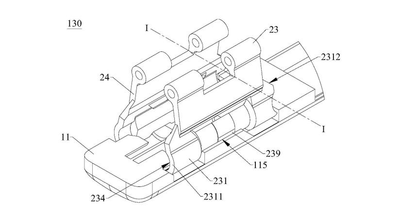
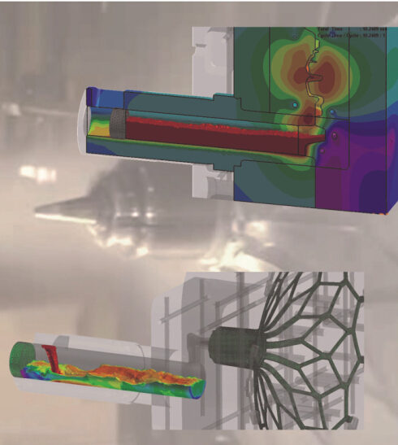
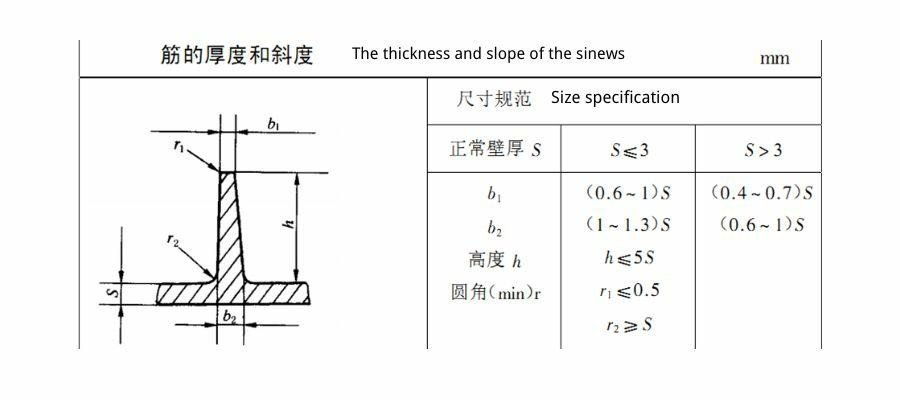
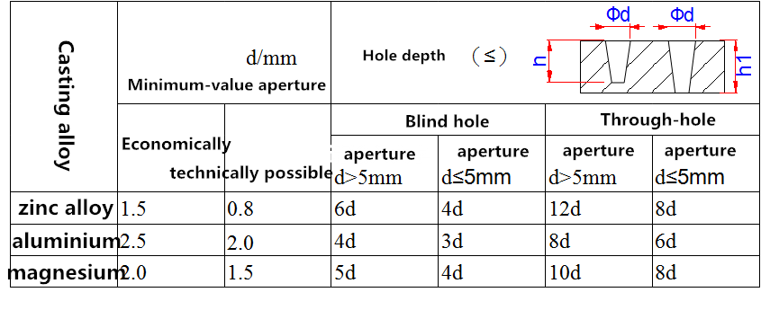
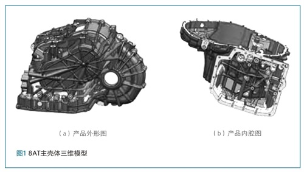
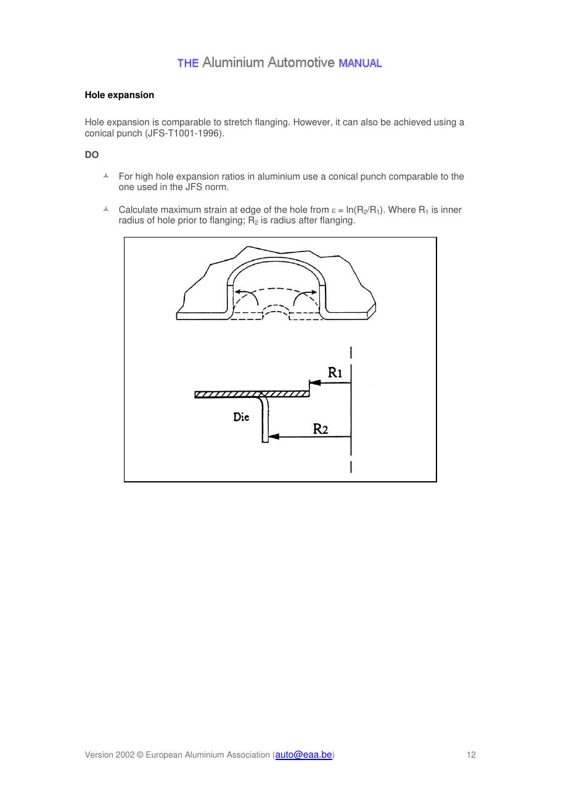
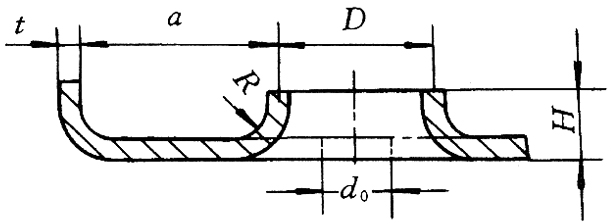
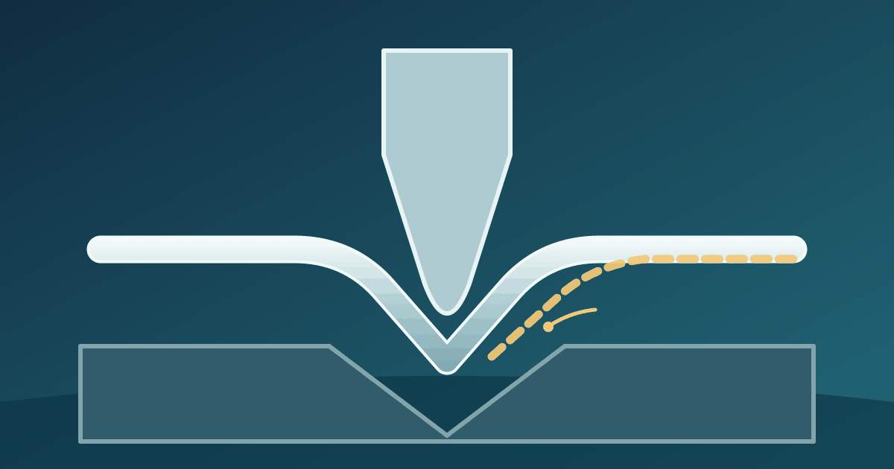
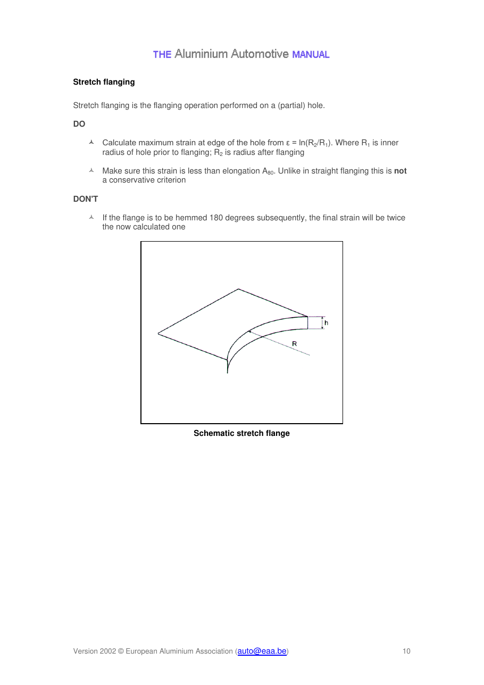

07
材料与工艺
注塑、钣金、压铸/CNC、3D 打印、包胶双色、表面处理对结构的约束与案例。 本类共 30 篇。
3D 打印 2 篇

FDM 一体打印活动件（Print-in-Place）：XY 每边 0.3 mm、Z 两整层的间隙规则
一体打印（Print-in-Place，PiP）是把铰链销和铰链孔、关节和关节窝按装配好的状态一次打出来，零件之间只靠一圈空气隔开。QIDI 给出的工作值是：0.4 mm 喷嘴、0.2 mm 层高下，**一体打印铰链每边 0.30–0.40 mm，球窝每边 0.35–0.50 mm，Z 向间隙取层高的整数倍且至少两层（0.4 mm）**；这大约是打印后再装配的销孔间隙（每边 0.15–0.25 mm）的两倍，因为熔在一起的一体件没法再磨开。B 站爱能特专栏（转述 Irv Shapiro 的教程）补充了做法：用「间隙 + 桥接」造出四周悬空的中间件，先打 0.2–0.6 mm 五孔测试块确认机器精度。

荣耀金属 3D 打印免组装转轴专利：连接余料与垂直打印方向的切割面
折叠屏转轴有轴盖、支架、摆臂、阻尼、同步、门板等几十个零件。荣耀专利 CN121952969A（申请日 2024-10-29）把其中会相对运动的零件，例如基座和摆臂，用金属 3D 打印**一次打成一个组合件**，彼此之间用薄壁或细杆状的「连接余料」临时连住；打完用激光切掉余料，原来余料占的位置就变成转动间隙。关键规则是**所有与余料相连的面都垂直于打印方向**，让余料像一面立着的薄墙，切割时不被零件挡住；台阶处统一用 135° 斜面自支撑。
发泡成型 2 篇

MuCell微发泡：气泡生长代替保压，筋壁比可以做到1比1
MuCell 微发泡把超临界氮气或二氧化碳溶进熔体，注射进型腔后靠泡孔成核、生长来填满并「保压」，不再依赖注塑机的高压保压。结构上的直接后果是：加强筋不必再按实心件 0.4–0.6 倍壁厚去削薄。伊之密写明可以「实现 1:1 的主壁与筋位结构」；Trexel 手册把同一条写成 Rib to wall thickness ratios of 1:1，并配对照图：常规设计筋明显细于主壁，MuCell 设计允许筋厚等于公称壁厚且不出现缩痕。它和 发泡件缩水：模温、排气与保压和实心件相反、气体辅助注塑（GAIM）：用气道掏空厚筋消缩痕 都在处理厚区收缩，但本篇的主角是筋壁比这条设计规则为什么可以放宽。

发泡件缩水：模温、排气与保压和实心件相反
发泡件整体收缩往往小于实心件，但皮层只有薄薄一层、底下是气泡，局部凹陷有时更狠。现场不要先减发泡剂，先查模温均匀性和排气；保压思路也和实心件相反——发泡件靠控温控压让气泡撑住，而不是靠高保压把料补进厚区。
表面处理 2 篇

免喷涂材料 vs 喷涂：成本、良率与三条硬边界
免喷涂是把金属/珠光颜料预先混进塑料粒子，注塑一次成型就有外观，省掉整条喷涂线。赫兹工业设计给出决策账：单件成本低 15–30%，盈亏平衡约月产 8000–12000 件；金暘新材料（SMARTMolding 专题）和鸿盛新材料则讲清它的结构代价：**片状铝粉在两股料流交汇处会竖起来，熔接线变成一条暗线**，所以结构设计要少开孔、浇口加宽、用顺序阀进胶或模内切，把熔接线「赶」到非外观面。

铝件阳极氧化的尺寸链：膜厚一半向外、遮蔽螺纹与挂点
阳极氧化膜是从铝基体「长出来」的转化膜，不是镀上去的。两家来源都用**「约一半向内、一半向外」**做初步估算：25 μm 硬质膜外表面偏移 12.5 μm，内孔缩小一整个膜厚（Five Flute）。仲德精密补上两件经常被忘的事：**前处理（碱蚀、化学梨地）会先溶掉基材**；加上膜厚公差后，阳极前的加工窗口反而比成品公差更窄（Ø50 H8 + 30 ± 5 μm 硬质膜，阳极前孔径须控制在 Ø50.035–50.064 mm）。严公差只有三条路：预补偿、遮蔽、氧化后精加工。挂点（导电接触点）没有膜，必须由设计师在图纸上指定。
注塑 6 篇
免喷涂材料 vs 喷涂：成本、良率与三条硬边界
免喷涂是把金属/珠光颜料预先混进塑料粒子，注塑一次成型就有外观，省掉整条喷涂线。赫兹工业设计给出决策账：单件成本低 15–30%，盈亏平衡约月产 8000–12000 件；金暘新材料（SMARTMolding 专题）和鸿盛新材料则讲清它的结构代价：**片状铝粉在两股料流交汇处会竖起来，熔接线变成一条暗线**，所以结构设计要少开孔、浇口加宽、用顺序阀进胶或模内切，把熔接线「赶」到非外观面。

双色注塑：硬胶先射、软胶后射的结构拆件规则
双色注塑是两种材料在同一台双色机上分两次成型、只出模一次：B 站专栏《【模具知识】15、双色模与产品结构设计》讲清了为什么必须「第一射硬胶、第二射软胶」、为什么第二射要做在前模、第二色拆件不低于 0.8 mm、以及如何用凹槽/圆孔/火花纹保证两色附着。
发泡件缩水：模温、排气与保压和实心件相反
发泡件整体收缩往往小于实心件，但皮层只有薄薄一层、底下是气泡，局部凹陷有时更狠。现场不要先减发泡剂，先查模温均匀性和排气；保压思路也和实心件相反——发泡件靠控温控压让气泡撑住，而不是靠高保压把料补进厚区。

换料收缩率：同一张图换料就裂，图纸必须按新缩水放缩
模具型腔是按某一种料的收缩率反向放大做出来的；同一张成品 3D 图换料却不重新放缩，得到的是系统性尺寸偏差，止口、卡扣和柱距会一起错。要在模型里按新料缩水率重新放缩，并核对流向各向异性和后收缩，而不是只改 BOM 或图纸角上的一个系数。

气体辅助注塑（GAIM）：用气道掏空厚筋消缩痕
气体辅助注塑先把型腔注到约 60%–90% 满，再注入氮气把厚截面芯部掏空，并由气体在内部均匀保压。把气道布置在需要消缩痕的粗筋上，整体壁厚可以减薄，粗筋不再靠实心堆料——这和「减胶坑 + 螺杆保压」是一条不同的工艺路径。
注塑倒扣脱模：强脱、斜顶还是滑块
卡扣等倒扣结构决定了模具要不要加侧向机构：深圳维亚达科技给出三步判断——先用悬臂梁应变公式 ε = 1.5·t·y / l² 判断能否强脱，再按倒扣在外侧（滑块）还是内侧（斜顶）选机构，最后按全生命周期（模具增量 + 周期 + 维护）比成本，并给出各材料强脱应变表和滑块/斜顶关键参数。
压铸/CNC 8 篇

压铸侧抽芯：侧孔或倒扣不能沿主开模方向退出时才加滑块
判断侧孔要不要抽芯，先看形成这个孔腔的钢芯能不能顺着主开模方向退出来；只有侧孔、内凹或反向扣位挡住退出时，才需要在侧向滑块、改结构和后加工三条路里选，而不是一看到侧孔就加一套抽芯机构。

压铸内浇口与横浇道：先定位置和截面积，再保证横浇道向内浇口收缩
压铸浇注系统要先为内浇口选位置和截面积，让金属液先填深处、少直冲型芯，再把横浇道做成从直浇道末端向内浇口逐渐缩小的通道；截面积和速度按充填公式校核，不能只凭经验随便开一条槽。

压铸壳体：壁厚、拔模与加强筋设计规则
一般铝/锌压铸壳体要把壁厚做薄、做均匀，用加强筋补刚度而不是加厚实心截面，并给内侧比外侧更大的拔模、在壁与筋交接处加圆角，避免厚薄突变和交叉厚节点；这与特斯拉 Giga Press 一类超大型一体压铸车身件不是同一套问题。

压铸螺纹嵌件：先旋入镶套再以弹珠限位，防止铝液进牙（嵌中嵌）
高精度内螺纹如果直接暴露在铝液里，牙缝很容易进铝、磕伤，通规就过不去；广东鸿图的做法是先把钢质螺纹嵌件旋进模具镶套（嵌中嵌），再靠弹珠限位放进压铸模，让镶套和台阶封住牙型，铸件只包住嵌件的滚花段。

压铸铸孔与自攻底孔：细针易断，小于2mm宜先导后再加工
要求不高的孔可以在压铸时用型芯直接铸出，但直径小于 2 mm 的型针很容易弯曲或折断，JH MIM 建议改成先导孔再加工；要气密的孔，NADCA 建议尽量铸出而不是事后钻出来，并且按是否还要机加工来决定铸孔拔模。

压铸铸态螺纹：外螺纹用对开牙或螺纹环，内螺纹芯需带轴向斜度
锌、铝、镁压铸件可以在一定条件下直接压出螺纹：外螺纹常用对开的两半牙腔或螺纹环，内螺纹则靠沿轴线带斜度的螺纹芯成形，而且长度有限；它适合粗牙、出模方向合适、载荷适中的接头，不能把它当成钢质嵌件那样的高精度反复拆装螺纹。

特斯拉 Giga Press 一体化压铸车身件
特斯拉用锁模力 55,000–61,000 kN 的 Idra Giga Press，把 Model Y 后车身（及后来的前车身）做成一次高压压铸成型的一体化铸件：80 kg 铝液以 10 m/s 射入真空模腔，周期约 80–90 秒；铸件再经淬火、修边、X 光查气孔、CNC 加工——这是「零件合并」思路在压铸工艺上的极端案例。

真空压铸：合模后抽出型腔气体，再在负压下充型以减少卷气
真空压铸是在金属液充填前，先把型腔（以及部分系统里的压室）里的气体抽出，再在负压下充型，从而减少高速充型时的卷气和气孔；它要靠合模密封、抽气时机和真空阀关闭与压射同步，而不是只在浇口旁边多开几条排气槽。
包胶/双色 1 篇
公差与尺寸链 2 篇
换料收缩率：同一张图换料就裂，图纸必须按新缩水放缩
模具型腔是按某一种料的收缩率反向放大做出来的；同一张成品 3D 图换料却不重新放缩，得到的是系统性尺寸偏差，止口、卡扣和柱距会一起错。要在模型里按新料缩水率重新放缩，并核对流向各向异性和后收缩，而不是只改 BOM 或图纸角上的一个系数。
铝件阳极氧化的尺寸链：膜厚一半向外、遮蔽螺纹与挂点
阳极氧化膜是从铝基体「长出来」的转化膜，不是镀上去的。两家来源都用**「约一半向内、一半向外」**做初步估算：25 μm 硬质膜外表面偏移 12.5 μm，内孔缩小一整个膜厚（Five Flute）。仲德精密补上两件经常被忘的事：**前处理（碱蚀、化学梨地）会先溶掉基材**；加上膜厚公差后，阳极前的加工窗口反而比成品公差更窄（Ø50 H8 + 30 ± 5 μm 硬质膜，阳极前孔径须控制在 Ø50.035–50.064 mm）。严公差只有三条路：预补偿、遮蔽、氧化后精加工。挂点（导电接触点）没有膜，必须由设计师在图纸上指定。
吸塑/热成型 1 篇
钣金 10 篇

薄板抽孔翻边攻牙：预冲孔翻起后再攻内螺纹（对照压铆螺母）
薄板上要攻内螺纹时，可以先按更小的预冲孔把孔壁翻起来，增加可攻牙的高度和牙数，再攻丝；这是板料自身翻出的螺纹筒，不是压入的压铆螺母。

钣金K因子与展开长度：中性层位置决定下料尺寸
折弯时外层被拉长、内层被压缩，只有中性层长度几乎不变；K 因子是中性层到内半径的距离与板厚之比，用它计算折弯余量或折弯扣除，才能从成品外形反推平板下料长度。

钣金冲压百叶窗：先切开再顶起仍连在板上的通风罩
冲压百叶窗不是在板上开一个通孔，而是先切出一道缝，再把相连的舌片顶起，形成仍连在板上的斜向通风罩；既保留材料连续，又提供进出风通道。

钣金卷边（Hemming）：把板边折回自身，做成封闭、开口、泪滴或绳状包边
卷边是把薄板边缘折回并压向自身，用双层边缘藏住毛刺、提高边缘刚度和观感；常用封闭（压平）、开口、泪滴和绳状四种几何，并受板厚和材料延展性限制。

钣金压筋（加强肋）：半圆筋与梯形筋用板料起伏补刚度
钣金压筋是把板料局部冲压成半圆或梯形截面的起伏，用几何惯性矩而不是加厚板来提高抗弯刚度；筋的高度、宽度、圆角和间距要按板厚比例控制，并避开折弯线。

钣金折弯件设计规则：最小弯曲半径与预留切口
钣金折弯的大部分缺陷（外侧开裂、回弹、孔变形、角部起皱、单边偏移）都能在设计阶段用几条比例规则避免：B 站专栏《钣金折弯件的结构设计原则》给出最小弯曲半径表（冷轧/镀锌板 R ≥ 2t、黄铜 R ≥ 1t）、直边高度 h ≥ R + 2t、孔边距 L ≥ 2t、侧弯切槽 K ≥ 2t 等 14 条规则。

钣金折弯回弹：先稳定工艺窗口再做角度补偿
折弯卸载后弹性恢复，夹角会张开，还可能出现侧壁弧曲和扭转；要先固定材料、V 口和凸模半径并测出稳定误差，再做过折或程序补偿，而不是给每一种牌号写一个固定的补偿角。

钣金拉深：拉深比、压边力与起皱拉裂
拉深是用凸模把平板压入凹模、在压边圈控制下把板料拉成杯形或盒形；压边力太小或拉深比过大，凸缘会起皱，压边力过大、圆角过小或润滑不足则容易在壁部或圆角处拉裂。

钣金曲线翻边：伸展翻边拉裂与压缩翻边起皱
曲线翻边不是简单的直角折边：凹弧一侧板边被拉长（伸展翻边）容易开裂，凸弧一侧板边被挤短（压缩翻边）容易起皱；European Aluminium 手册把这两类与直线翻边、扩孔分开讨论，并给出后续还要 180° 包边时应变会再加倍的提醒。

风管 Pittsburgh 锁扣咬口：袋口钩住直角翻边后再把唇边压死（对照按扣咬口）
矩形风管的 Pittsburgh 角缝一边滚出带内钩的袋口，另一边折出直角翻边；把翻边沿全长插入袋口后，再把袋口外唇压死，把翻边锁在金属折层里。它和按扣咬口（snap lock / button punch）都能做角缝，但按扣是靠凸起卡入袋口，不必再锤合，强度和适用压力也更受限制。